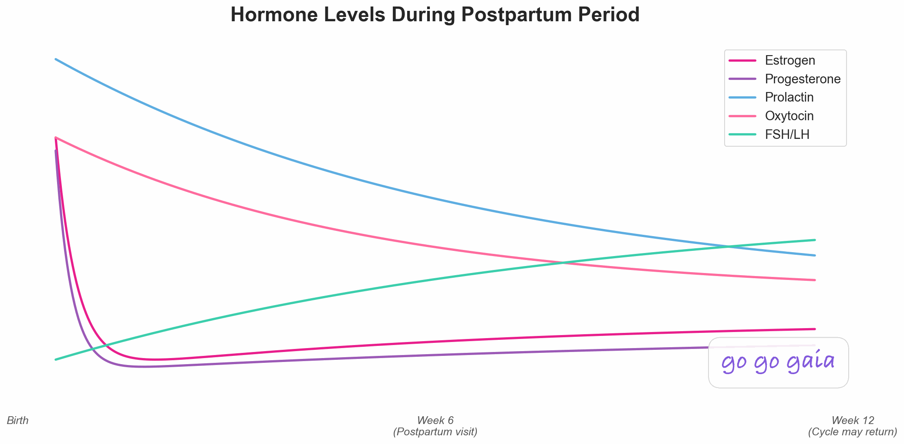

Best Postpartum & Newborn Tracking App 2026: 6 Apps Compared for Baby and Mother
For newborn sleep: Huckleberry. For a simple baby logger: Nara Baby. For nursing and pumping detail: Glow Baby. For free guidance and community: What to Expect or BabyCenter. For postpartum mental health support: Canopie. For tracking your own recovery: Veya. Most families pair one baby tracker with one app for the parent.
Quick Answer: Best Postpartum & Newborn Tracking App?
- For newborn sleep: Huckleberry. Its SweetSpot feature predicts your baby's nap and sleep times from their rhythms
- For a simple baby logger: Nara Baby. Feeding, diapers, pumping, and sleep logging, free to download with optional in-app purchases
- For nursing detail and community: Glow Baby. Nursing and pumping logs with storage details, plus community features
- For free guidance and community: What to Expect / BabyCenter. Week-by-week guidance and parents at the same stage
- For postpartum mental health support: Canopie. Short, structured programs built around the mother's wellbeing
- For tracking your own recovery: Veya. Bleeding, mood, sleep, and pain through the fourth trimester, then back to cycle tracking when your period returns
How We Picked These Apps
We shortlisted the 6 apps compared below from what women actually use for tracking newborn feeding and sleep alongside postpartum recovery, and compared them on the criteria that matter most here: feeding and sleep logging, caregiver sync, mother's recovery tracking, and privacy practices. Pricing was re-verified on the App Store in October 2026, and we read each app's current privacy policy rather than relying on its marketing pages.
Full disclosure: this site is published by Holland Neurotech Inc., the maker of Veya. The list isn't ranked — each app is presented as the fit for a specific need — we include our own app only where it genuinely belongs, and we say plainly when a competitor is the better choice.
Doctors call the first 12 weeks after birth the fourth trimester. ACOG, the American College of Obstetricians and Gynecologists, recommends treating postpartum care as an ongoing process rather than a single checkup: contact with your provider within the first 3 weeks after birth, and a comprehensive visit no later than 12 weeks.[2] That's a lot of recovery to keep track of while also keeping a tiny human alive. If you're a coach supporting clients after birth, there's a guide on how postpartum fitness coaches track clients. For new parents, the postpartum tracker logs recovery, mood and sleep side by side.
The apps in this space split into two camps. Baby trackers like Huckleberry, Nara Baby, and Glow Baby are built to log feeds, naps, and diapers. Mother-focused apps like Canopie and Veya are built around your recovery and mental health. Almost nothing does both well, so the practical answer for most families is one app from each camp. This guide helps you pick which.
Full Transparency
This guide is published by Holland Neurotech Inc., the company behind Veya. We've compared each app on its actual features, recent user reviews, and publicly available information, with pricing checked on June 1, 2026.
Up front: Veya is not the best baby tracker on this list. Huckleberry and Nara Baby do that job better. We included Veya because it covers the other half of the postpartum picture, the mother's recovery, and we'll be honest about what it doesn't do.
How We Compared
To compare these 6 postpartum and newborn tracking apps, we checked each one against the same checklist: feeding and sleep logging, caregiver sync, mother's recovery tracking, privacy practices, and free-tier quality. For each app we reviewed its current App Store listing, published pricing, privacy policy, and recent user reviews. Veya is our own app; we held it to the same checklist and note where competitors are stronger.
Last reviewed: October 9, 2026
Medical Disclaimer
This article is for educational and informational purposes only and does not constitute medical advice. Tracking apps can help you record and share what you're experiencing, but they can't diagnose anything, and they don't replace care from your OB-GYN, midwife, pediatrician, or mental health professional. Always talk with your healthcare provider about your recovery, your baby's health, and any symptoms that concern you.
If you're having thoughts of harming yourself or your baby, you don't have to wait for an appointment. In the US, call or text 988 (Suicide and Crisis Lifeline) any time, day or night. If you're elsewhere, contact your local emergency number or a crisis line in your country.
Why does a new parent need two kinds of tracking?
After a birth, two people are recovering and adjusting, and they need completely different things tracked. Most app roundups skip this point, which is how new parents end up with three baby apps and nothing that tracks the person who actually gave birth.
What the Baby Needs Tracked
In the early weeks, your pediatrician will ask about feeds, wet and dirty diapers, sleep, and weight at every visit. Newborns eat around the clock, and at 3 a.m. it's genuinely hard to remember which side you nursed on last or when the last wet diaper was. This is the job baby trackers were built for, and the good ones make logging take two taps.
What You Need Tracked
Your body is doing something enormous. Within days of delivery, estrogen and progesterone fall from their pregnancy peaks back toward baseline. Many new mothers notice mood swings, night sweats, and weepiness in the first couple of weeks. At the same time, postpartum bleeding continues for weeks, and healing (from a tear, an episiotomy, or a C-section) has its own timeline. Our postpartum recovery guide walks through what's typical week by week.

The data that matters for you is different from the baby's: bleeding (amount, color, whether it's increasing), pain, mood, sleep, and eventually the return of your cycle. That's the record your provider can actually use at the 3-week contact and the 12-week visit ACOG recommends.[2]
Three Questions Before You Pick
- What's hardest right now? If it's the baby's sleep, a prediction tool like Huckleberry's earns its keep. If it's just keeping records straight between caregivers, a free logger does the job. If it's how you're feeling, prioritize an app that tracks you.
- Who needs to see the data? A partner or grandparent sharing night shifts needs caregiver sync. Your pediatrician wants feed and diaper counts. Your own provider wants your recovery data. Different audiences, different apps.
- What's your budget? There are genuinely good free options in both camps. Paid tiers mostly buy guidance (sleep predictions, expert consults, structured programs) rather than basic logging.
Which postpartum and newborn app fits which need?
First, the four apps that track the baby. Then the two that track you.
For Newborn Sleep: Huckleberry
Best if you want: help getting your baby to sleep, not just a record of when they didn't.
Key Features
- SweetSpot: predicts your baby's next ideal nap and bedtime window from their age and recent sleep
- Feeding logs with nursing timers (left/right breast, duration) and bottle amounts
- Diaper, pumping, growth, and milestone tracking
- Multi-caregiver sync so partners log to the same record
- Custom sleep plans with expert check-ins, and Berry AI chat guidance, on the Premium tier[3]
Strengths
- SweetSpot is Huckleberry's signature feature: it predicts nap and sleep times and learns each child's rhythms, which turns sleep logging from record-keeping into something that guides the day[3]. We haven't verified a prediction accuracy rate.
- The logging itself is fast and well designed for one-handed, middle-of-the-night use
- Sleep guidance is grounded in the baby's actual data, not generic age charts
- Cross-platform (iOS and Android) with caregiver sync
Limitations
- The most useful features sit behind a subscription. SweetSpot, Insights, and enhanced reports need Huckleberry Plus, and Berry AI chat and custom sleep plans need Premium[3]
- It tracks the baby, not your recovery. There's no logging for bleeding, healing, or the mother's mood
- Like any prediction tool, SweetSpot gets better with consistent logging, so it rewards diligence
Who Should Choose This
Huckleberry is ideal if you:
- Are struggling with naps, bedtime, or night wakings and want data-driven help
- Want one app for feeds, diapers, sleep, and growth that both parents can use
- Are willing to pay for guidance, not just logging
Pricing: Free tier (basic logging, caregiver sync, and a breastfeeding timer). The App Store lists Huckleberry Plus at $11.99, $58.99, and $68.99 and Premium at $14.99 and $119.99 as of October 2026, without saying which are monthly or annual, so check the current plans in the app.[3]
Download: Available for iOS and Android via huckleberrycare.com
For Free Baby Logging: Nara Baby
Best if you want: complete baby logging that's quick to use, with a free version to try first.
Key Features
- Feeding (breast, bottle, solids), diaper, pumping, and sleep logging
- Growth tracking and baby firsts
- Routines and daily summaries
- Twin support and multi-caregiver sync
- Parent logging: mood, symptoms, hydration, food, and sleep for recovery[6]
Strengths
- Free to download, with optional in-app purchases (the App Store lists monthly and lifetime options), so check what the free tier includes[6]
- Fast, clean logging that holds up at 3 a.m.
- Handles twins well, which surprisingly few baby apps do
- The parent logging (mood, symptoms, hydration, food, sleep) gives the mother more attention than most baby trackers do
Limitations
- It's a tracker, not a coach. There are no sleep predictions, no analysis, and no scheduling guidance
- The parent logging is lighter than a dedicated recovery tracker, and its listing doesn't mention bleeding or healing logs or cycle-return tracking
- Worth knowing who makes it: the app is published by Nara Organics, Inc.[6]
Who Should Choose This
Nara Baby is ideal if you:
- Want dependable feed, diaper, and sleep records and a free version to try first
- Have twins or multiple caregivers sharing the logging
- Don't need predictions or coaching, just a clear record
Pricing: Free to download, with in-app purchases: the App Store lists monthly options from $6.99 to $9.99 and lifetime options from $49.99 to $99.99 as of October 2026.[6]
Download: Available on the iOS App Store and Android
For Nursing Detail and Community: Glow Baby
Best if you want: thorough nursing and pumping records plus a large community of parents at the same stage.
Key Features
- Detailed nursing, pumping, and milk storage logs
- Growth percentile tracking with projections
- Baby illness, symptom, and photo logging
- Milestone tracking and daily summaries
- Community features within the app
Strengths
- Detailed nursing and pumping logs, including storage details in its Pump Log, which helps parents building a freezer stash[4]
- Growth percentile projections give context that plain measurements don't
- The community features may feel supportive to some parents in the isolating early months
Limitations
- Many features sit behind Glow Premium
- Community features require sharing data, and seeing other babies' milestones can fuel comparison anxiety for some parents
- Privacy is worth weighing: its App Store privacy label lists health data, location, and contact info among the data used to track you or linked to you, so read the policy[4]
- Tracks the baby, not the mother's recovery
Who Should Choose This
Glow Baby is ideal if you:
- Are nursing or pumping and want detailed feeding records
- Want a built-in community of parents with babies the same age
- Have read its privacy policy and are comfortable with the trade-off
Pricing: Free to download. Glow Premium is listed at $59.99 per year after a 7-day trial and $79.99 for lifetime access across Glow apps, with other price points also listed (App Store, as of October 2026).[4]
Download: Available for iOS and Android via glowing.com
For Free Content and Community: What to Expect / BabyCenter
Best if you want: trusted week-by-week guidance and a group of parents whose babies are exactly as old as yours.
Key Features
- Week-by-week and month-by-month baby development content
- Community groups organized by birth month, so everyone is at the same stage
- Milestone guides and parenting articles
- Basic tracking tools (feeding, growth, milestones)
Strengths
- Both apps are free to download, and the editorial content is a draw. What to Expect builds on the book series of the same name
- Reading "what's normal at 6 weeks" from a trusted source at 2 a.m. is a real service
- Both carry over naturally if you used them during pregnancy
Limitations
- Tracking is basic in both. These are content and community apps with logging attached, not dedicated trackers
- Both are published by Everyday Health, Inc.[6], so check its privacy policy for what is shared for advertising
- Neither tracks the mother's recovery in any meaningful way
Who Should Choose This
What to Expect or BabyCenter is ideal if you:
- Want guidance and reassurance more than detailed logging
- Liked either app during pregnancy and want continuity
- Want to talk with other parents at exactly the same stage, for free
Pricing: Both free to download.
Download: whattoexpect.com and babycenter.com, both on iOS and Android
Those four apps cover the baby. The next two are for the person who gave birth, and this is where the category gets thin. The CDC reports that about 1 in 8 women with a recent live birth reported symptoms of postpartum depression.[1] If you only remember one thing from this guide, make it this: the baby's app will not notice if you're not okay.
For Postpartum Mental Health: Canopie
Best if you want: structured support for the emotional side of postpartum, not another baby log.
Key Features
- Short self-guided sessions (2 to 10 minutes) plus a 12-day core program, built on what Canopie calls clinically validated therapies[6]
- Mood check-ins designed around the postpartum experience
- Sessions on topics like sleep deprivation, feeding difficulties, and returning to work[6]
- Programs sized for someone with a newborn (minutes, not hours)
Strengths
- It's built entirely around the mother. That alone makes it rare in this category
- Its listing describes clinically validated techniques delivered in pieces short enough to actually finish; we haven't evaluated the evidence ourselves
- It treats postpartum mental health as expected and manageable rather than as a crisis topic
Limitations
- It's not a baby tracker at all. No feeds, diapers, or sleep logging
- It's also not a physical recovery tracker. Mood and exercises, yes, but no bleeding or symptom logging
- An app is a supplement to professional care, never a replacement
- The full programs are paid, and the in-app purchase structure isn't a simple single subscription
Who Should Choose This
Canopie is ideal if you:
- Want structured support for anxiety or low mood, in a format that fits newborn life
- Are already covered on baby tracking and recovery logging
- Want something preventive you can start during pregnancy or right after birth
Pricing: 7-day free trial; the App Store lists paid in-app purchases at $27.99 as of October 2026.[6] Coverage through employers or health plans varies, so check yours.
Download: Available on the iOS App Store and Android
For Tracking Your Own Recovery: Veya
Best if you want: your bleeding, mood, sleep, and pain tracked through the fourth trimester, in the same app that tracked your pregnancy and will track your cycle when it returns.
Key Features
- Postpartum recovery tracking: bleeding, healing, pain, and pelvic-floor notes
- Daily mood logging through the fourth trimester
- Sleep and symptom tracking (night sweats, headaches, energy)
- Transition back to cycle tracking when your period returns
- Continuity from pregnancy mode, so your health record doesn't reset at delivery
- Doctor-ready data export for postpartum visits
Strengths
- It is built around the person who gave birth, which most baby trackers on this list are not. Bleeding, mood, sleep, and pain in one log you can hand to your provider
- Your data carries through from pregnancy to postpartum to regular cycles, so there's no app-switching and no starting over
- When your period comes back (often a little different than before), you're already set up to track it
- Free core features, no ads, no data selling
Limitations
- iOS only. No Android version yet
- It is not a newborn sleep or feeding coach. There's no nap prediction like Huckleberry's SweetSpot and no detailed baby feed and diaper logging. For the baby, you'll still want one of the apps above
- Newer app with a smaller community than the established names here
Who Should Choose This
Veya is ideal if you:
- Want your own recovery tracked with the same care everyone gives the baby's naps
- Tracked your pregnancy (or your cycle before it) and want one continuous health record
- Are on iOS and plan to keep tracking your cycle after it returns
- Are pairing it with a baby tracker rather than replacing one
Pricing: Free (core features including recovery, mood, sleep, and cycle tracking), Premium $9.99/month or $49.99/year for AI insights and advanced correlations (App Store listing, as of October 2026).[6]
Download: Available on iOS App Store
Worth Noting: Other Apps in This Space
A few more apps come up often among new parents. They didn't get full profiles here, but they're worth knowing about:
- Baby Connect offers sharing with family, nannies, and daycare, plus medicine, vaccine, and temperature tracking. It is paid: the App Store lists $6.99 (Family), $49.99 for 12 months, and $14.99 for the Professional tier as of October 2026[6]
- Baby Tracker (by Nighp Software) is a free, simple logger where data stays on your device with no account required. The trade-off is no cloud backup or caregiver sync
- Postpartum Journey and MomsLab focus on the mother's physical recovery; check each listing for what it covers
A note on screening: at your postpartum visits (and often at your baby's pediatrician visits), your provider will likely go through the Edinburgh Postnatal Depression Scale (EPDS), a widely used questionnaire that clinicians use to screen for postpartum depression, first published in 1987.[5] It works best as a conversation with a professional. If you've been tracking your mood, bring that record. It makes the conversation concrete.
Feature Comparison Table
Here's how the 6 apps cover both jobs, the baby's tracking and yours:
| Feature | Huckleberry | Nara Baby | Glow Baby | What to Expect / BabyCenter | Canopie | Veya |
|---|---|---|---|---|---|---|
| Newborn Feeding Log (Breast/Bottle) | ✅ Yes | ✅ Yes | ✅ Yes | ⚠️ Basic | ❌ | ❌ |
| Nursing Timer (Left/Right) | ✅ Yes | ✅ Yes | ✅ Yes | ❌ | ❌ | ❌ |
| Diaper Tracking | ✅ Yes | ✅ Yes | ✅ Yes | ⚠️ Basic | ❌ | ❌ |
| Baby Sleep Tracking | ✅ Yes | ✅ Yes | ✅ Yes | ⚠️ Basic | ❌ | ❌ |
| Sleep Predictions / Coaching | 🔒 SweetSpot (Plus) | ❌ | ❌ | ❌ | ❌ | ❌ |
| Growth / Percentile Charts | 🔒 Plus | ✅ Yes | ✅ With projections | ⚠️ Milestones | ❌ | ❌ |
| Multi-Caregiver Sync | ✅ Yes | ✅ Yes | ✅ Yes | ❌ | ❌ | ❌ |
| Mother's Recovery Tracking (Bleeding, Healing) | ❌ | ⚠️ Light | ❌ | ❌ | ❌ | ✅ Yes |
| Postpartum Mood / Mental Health Check-Ins | ❌ | ⚠️ Mood log | ❌ | ❌ | ✅ Core feature | ✅ Yes |
| Pelvic Floor / Core Recovery | ❌ | ❌ | ❌ | ❌ | ⚠️ Not listed | ⚠️ Notes |
| Transition Back to Cycle Tracking | ❌ | ❌ | ⚠️ Separate Glow apps | ❌ | ❌ | ✅ Built in |
| Community / Content | ⚠️ Articles | ❌ | ✅ Community | ✅ Large | ⚠️ Programs | ❌ |
| Privacy Practices | Read the policy | Read the policy | ⚠️ Read the policy | ⚠️ Read the policy | Read the policy | ✅ No data selling |
| Free Tier Quality | ⚠️ Basic logging | ⚠️ Free + in-app purchases | ⚠️ Limits | ✅ Free to download | ⚠️ Trial + free elements | ✅ Generous |
| Price | Free, Plus from $11.99 | Free | Free, $59.99/yr premium | Free | Free + paid programs | Free, $9.99/mo premium |
| Best For | Newborn sleep | Free baby logging | Nursing + community | Content + community | Maternal mental health | Mother's recovery |
The pattern in that table is the whole point of this guide. The left side of the table (baby tracking) is crowded with good options. The right side (the mother) is nearly empty.
How do you choose between these apps?
Here's the bottom line for each app:
Choose Huckleberry if:
- Sleep is the thing breaking you, and you want predictions instead of just records
- You want one well-designed app for all the baby's logging
- You're willing to pay around $69/year for the features that matter
Choose Nara Baby if:
- You want complete baby logging with a free version to try first
- You have twins or several caregivers sharing the work
- You don't need coaching, just a clear shared record
Choose Glow Baby if:
- Nursing, pumping, and milk storage detail matter most to you
- You want an active community of parents at the same stage
- You've weighed the privacy trade-offs and are comfortable
Choose What to Expect or BabyCenter if:
- You want trusted guidance and community more than detailed logging
- You used either app during pregnancy and want continuity
- You want a free option
Choose Canopie if:
- You want structured support for postpartum anxiety or low mood
- You want programs short enough to finish with a newborn in your arms
- Baby tracking is already covered by another app
Choose Veya if:
- You want your own recovery (bleeding, mood, sleep, pain) tracked, not just the baby's day
- You want one health record that runs from pregnancy through postpartum and back to regular cycles
- You're on iOS and pairing it with a baby tracker for the newborn side
What should you know about these apps' privacy?
Postpartum data is sensitive twice over: it's health data about you (including mental health) and data about your baby. Here's what's worth knowing:
- Glow Baby: its App Store privacy label lists health data, location, and contact info among the data used to track you or linked to you.[4] Community features also require sharing data to participate. Read the policy before signing up
- What to Expect and BabyCenter: both are published by Everyday Health, Inc., so read its privacy policy for what is shared for advertising
- Huckleberry: its App Store privacy label lists health data, contact info, photos, and identifiers as linked to you, so read the policy[3]
- Nara Baby: its App Store privacy label lists contact info and user content as linked to you, and the app is published by Nara Organics, Inc.; read the policy[6]
- Canopie: mental health data deserves extra care, so read Canopie's policy before sharing mental health data, and if your access runs through an employer or health plan, check what is shared
- Veya: no data selling and no ads. You can export or delete your data at any time
Whatever you choose, two minutes of checking goes a long way: does the app share data with advertisers, and can you delete your data completely when you're done with it?
How do you make postpartum tracking work?
A few things that make postpartum tracking actually work, learned the hard way by a lot of parents:
- Pick two apps, not five. One for the baby, one for you. Every additional app is another thing to maintain on no sleep.
- Get every caregiver on the same baby app from day one. Half-complete logs aren't much better than no logs. If your partner does night feeds, the app needs to be on their phone too.
- Log in the moment, not from memory. Sleep deprivation rewrites history with remarkable confidence. Two taps now beats reconstruction later.
- Spend one minute a day on your own log. Bleeding, pain, mood, sleep. That's it. It's the minute most likely to matter at your postpartum visits.
- Bring your data to your postpartum visits. ACOG recommends provider contact within 3 weeks of birth and a full visit by 12 weeks.[2] "How have you been feeling?" is a hard question to answer well from memory. A log answers it for you.
- Let the baby tracking go when it's done its job. Most parents naturally stop logging diapers after the early months, once feeding is established and the pediatrician stops asking. That's success, not falling off the wagon.
Frequently Asked Questions
What's the best app for tracking a newborn's sleep and feeding?
Huckleberry and Nara Baby are the two standouts. Huckleberry is the stronger choice if sleep is your main struggle, because its SweetSpot feature predicts your baby's next ideal nap window from their age and recent sleep. Nara Baby is a strong free-to-start option: feeding, diapers, pumping, sleep, and growth logging, with optional in-app purchases. Both sync between caregivers.
Is there one app that tracks both the baby and the mother?
Not well, and that's the honest gap in this category. Nara Baby includes parent logging (mood, symptoms, hydration, food, sleep), which is more than most baby trackers offer. But no baby tracker follows your bleeding, healing, pain, and the return of your cycle, and no recovery tracker logs feeds and diapers in the detail a pediatrician asks about. Most families end up pairing one of each: a baby tracker like Huckleberry or Nara Baby, plus an app that tracks the mother's recovery.
What should I track for my own postpartum recovery?
The basics your provider will ask about at postpartum visits: bleeding (how heavy, what color, whether it's increasing), pain, mood, sleep, and any symptoms that worry you. If you're breastfeeding, feeding frequency and any pain matter too. Once your cycle returns, tracking it again helps you learn what your new normal looks like, since cycles can come back a little different after pregnancy. Our postpartum recovery guide covers what's typical week by week, and our guide to mood tracking explains why the mood piece matters so much.
When does your period come back after having a baby?
It varies a lot, and breastfeeding is a big factor: if you're breastfeeding regularly, periods can stay away for many months. Ask your provider what to expect in your situation, including when to think about contraception. When your cycle does come back, our period tracking guide covers how to get to know it again.
Are paid baby tracking apps worth it, or is a free one enough?
It depends on what problem you're solving. If you need to log feeds, diapers, and sleep so caregivers and the pediatrician are on the same page, Nara Baby has a free version that covers that. Paying makes sense when you want guidance rather than just records. Huckleberry Plus (listed at $68.99 on the App Store as of October 2026) earns its cost if SweetSpot's nap predictions help your baby sleep, and the Premium tier adds Berry AI chat and custom sleep plans with expert check-ins. Try a free option first and upgrade only if you hit its limits.
What is the Edinburgh Postnatal Depression Scale (EPDS)?
It's a widely used screening questionnaire that clinicians use to check for symptoms of postpartum depression, first published in 1987.[5] Your provider typically goes through it at postpartum visits, and many pediatricians also screen mothers at well-baby visits. It's a conversation tool used with a professional, not a self-diagnosis tool. If you've been tracking your mood, that record makes the conversation more concrete. And if you're struggling right now, you don't need to wait for a visit: in the US you can call or text 988 any time.
Final Thoughts
The clearest takeaway from this comparison: you're choosing apps for two patients, not one. Treat them as two separate decisions and both get easier.
For the baby, Huckleberry is built for sleep if that is the struggle, Nara Baby is a strong free-to-start logger, Glow Baby suits nursing detail and community, and What to Expect or BabyCenter cover content and connection at no cost. For you, Canopie offers structured support for the mental health side, and Veya tracks the physical and emotional recovery (bleeding, mood, sleep, pain, and eventually your cycle) that most baby-focused apps skip. If you're still pregnant and planning ahead, our pregnancy app comparison covers the nine months before this one, and our pregnancy tracking guide explains what's worth recording along the way.
The baby will get tracked. Babies always do. The person more likely to fall through the cracks in the fourth trimester is you, so whichever apps you choose, make sure one of them is watching your side of the recovery.
Your baby gets a checkup schedule. So do you.
ACOG recommends postpartum care be an ongoing process, not a single visit: contact with your provider within 3 weeks of birth, and a full visit by 12 weeks. Showing up with a real record of your bleeding, mood, sleep, and pain makes those visits work harder for you.
About a minute a day. Your 6-week visit becomes a different conversation when you bring data.
Related Articles
- Postpartum Recovery Guide: The Fourth Trimester Explained
- Complete Guide to Pregnancy Tracking
- Why Mood Tracking Matters for Women's Health
- Best Period Tracker App 2026: Clue vs Flo vs Ovia Compared
Other App Comparisons
- Best Pregnancy Tracking App 2026: 6 Apps Compared
- Best Fertility Tracking App 2026: 8 Apps Compared for TTC
- Best IVF Tracking App 2026: 5 Apps Compared
- How to Choose a Period Tracker App
References
- Centers for Disease Control and Prevention. Depression During and After Pregnancy: about 1 in 8 women with a recent live birth reported symptoms of postpartum depression. cdc.gov
- ACOG Committee Opinion No. 736: Optimizing Postpartum Care. Obstetrics & Gynecology. 2018;131(5):e140-e150. Contact within the first 3 weeks and a comprehensive visit no later than 12 weeks. PubMed
- Huckleberry: App Store listing (price points, SweetSpot, tiers, privacy label), viewed October 9, 2026. apps.apple.com
- Glow Baby: App Store listing (Glow Premium prices, Pump Log, privacy label), viewed October 9, 2026. apps.apple.com
- Cox JL, Holden JM, Sagovsky R. Detection of postnatal depression: development of the 10-item Edinburgh Postnatal Depression Scale. British Journal of Psychiatry. 1987;150:782-786. PubMed
- App Store listings, viewed October 9, 2026: Nara Baby, Canopie, Baby Connect, What to Expect, and Veya